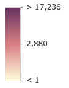
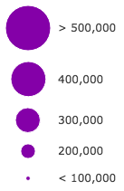
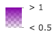

UniqueValueRenderer allows you to symbolize features in a FeatureLayer based on one or more matching string attributes. This is typically done by using unique colors, fill styles, or images to represent features with equal values in a string field.
When constructing the renderer, the string field from which to define the unique types must be specified. Each type and its associated symbol must also be defined using the addUniqueValueInfo() method or the uniqueValueInfos property in the constructor.
In the image below, each polyline is symbolized with a color and style that is different depending on the road classification of each feature in a layer representing major highways. For example, thick orange features represent interstate highways (freeways), purple lines represent U.S. Highways, and the thin dotted lines represent other major roads.
UniqueValueRenderer can also be used to thematically visualize numeric data attributes in conjunction with unique values. This is accomplished with visual variables. Visual variables define the parameters for data-driven visualizations of numeric data. They allow you to easily map continuous ramps of color, size, and/or opacity to minimum and maximum data values from one of the layer's numeric attribute fields.
When used in a UniqueValueRenderer, the unique symbol types are typically defined with color while size and/or opacity visual variables are added to create a bivariate map.
The example below uses a UniqueValueRenderer to shade each building feature with a color depending on its type (e.g. purple represents condominium, green represents hotels, orange is residential, etc.). A size visual variable is then added to depict the real-world height of each building.
To read more about visual variables see the visualVariables property.
Example
var renderer = new UniqueValueRenderer({
field: "REGION",
defaultSymbol: new SimpleFillSymbol()
});
// All features with value of "North" will be blue
renderer.addUniqueValueInfo("North",
new SimpleFillSymbol({
color: "blue"
})
);
// All features with value of "East" will be green
renderer.addUniqueValueInfo("East",
new SimpleFillSymbol({
color: "green"
})
);
// All features with value of "South" will be red
renderer.addUniqueValueInfo({
value: "South",
symbol: new SimpleFillSymbol({
color: "red"
})
});
// All features with value of "West" will be yellow
renderer.addUniqueValueInfo({
value: "West",
symbol: new SimpleFillSymbol({
color: "yellow"
})
});
renderer.visualVariables = [{
type: "opacityInfo",
field: "POPULATION",
normalizationField: "SQ_KM",
// features with 30 ppl/sq km or below are assiged the first opacity value
stops: [{ value: 100, opacity: 0.15 },
{ value: 1000, opacity: 0.90 }]
}];
var layer = new FeatureLayer({
url: "http://url.to.service",
renderer: renderer
});Constructors
new UniqueValueRenderer(properties)
| Name | Type | Description |
|---|---|---|
properties | Object | optional See the properties for a list of all the properties that may be passed into the constructor. |
Property Overview
| Name | Type | Summary | |
|---|---|---|---|
| String | Label used in the Legend to describe features assigned the default symbol. more details | more details | |
| Symbol | Default symbol used to draw a feature whose value is not matched or specified by the renderer. more details | more details | |
| String|Function | The name of the attribute field the renderer uses to match unique values or types. more details | more details | |
| String | If needed, specifies the name of an additional attribute field the renderer will use to match values. more details | more details | |
| String | If needed, specify the name of a third attribute field the renderer will use to match values. more details | more details | |
| String | String inserted between the values if multiple attribute fields are specified. more details | more details | |
| String | The type of Renderer. more details | more details | |
| Object[] | Each element in the array is an object that provides information about a unique value associated with the renderer. more details | more details | |
| Object[] | Visual variables define the parameters for data-driven geographic visualizations of numeric data. more details | more details |
Property Details
defaultLabelString
Label used in the Legend to describe features assigned the default symbol. The default symbol is used to draw all features with unspecified, unmatched values.
defaultSymbolSymbol
Default symbol used to draw a feature whose value is not matched or specified by the renderer.
The name of the attribute field the renderer uses to match unique values or types. A function may also be used to return a string value representing unique types if the desired type does not already explicitly exist in a field.
Example
// function used to return string values for types when a valid string // field for this use case (classification by population) doesn't exist function rankByPop(feature){ // a number field representing total population var population = feature.attributes.POP2010; // var used to classify features by population var rank; if(pop < 10000){ rank = "low"; } else if (pop > 10000 && pop < 50000){ rank = "medium"; } else if (pop > 50000){ rank = "high"; } return rank; } var renderer = new UniqueValueRenderer({ field: rankByPop, // values returned by this function will // be used to render features by type uniqueValueInfos: [ { value: "high", // features labeled as "High" symbol: sym1 // will be assigned sym1 }, { value: "medium", // features labeled as "Medium" symbol: sym2 // will be assigned sym2 }, { value: "low", // features labeled as "Low" symbol: sym3 // will be assigned sym2 } ] });field2String
If needed, specifies the name of an additional attribute field the renderer will use to match values. For example, if you specify two fields:
var renderer = new UniqueValueRenderer({ field: "REGION", field2: "RANK", fieldDelimiter: ", ", // comma + space used to separate values from all fields uniqueValueInfos: [ { value: "North, 1", // features in the "North" region and a rank of 1 symbol: sym1 // will be assigned sym1 }, { value: "North, 2", // features in the "North" region and a rank of 2 symbol: sym2 // will be assigned sym2 }, ... ] });All combinations of values of field and
field2are unique values and may have their own symbol.- See also:
field3String
If needed, specify the name of a third attribute field the renderer will use to match values. For example, if you specify three fields:
var renderer = new UniqueValueRenderer({ field: "REGION", field2: "RANK", field3: "CLASS", fieldDelimiter: ", ", // comma + space used to separate values from all fields uniqueValueInfos: [ { value: "North, 1, medium", // features in the "North" region, a rank of 1, and "medium" class symbol: sym1 // will be assigned sym1 }, { value: "North, 2, medium", // features in the "North" region, a rank of 2, and a "medium class symbol: sym2 // will be assigned sym2 }, ... ] });All combinations of values of field, field2, and
field3are unique values and may have their own symbol.- See also:
fieldDelimiterString
String inserted between the values if multiple attribute fields are specified.
Example
var renderer = new UniqueValueRenderer({ field: "REGION", field2: "RANK", fieldDelimiter: ", ", // comma + space used to separate values from all fields uniqueValueInfos: [ { value: "North, 1", // features in the "North" region and a rank of 1 symbol: sym1 // will be assigned sym1 }, { value: "North, 2", // features in the "North" region and a rank of 2 symbol: sym2 // will be assigned sym2 }, ... ] });typeStringreadonly
The type of Renderer. For UniqueValueRenderer this value is always
uniqueValue.uniqueValueInfosObject[]
Each element in the array is an object that provides information about a unique value associated with the renderer. Each object has the following specification:
visualVariablesObject[]
Visual variables define the parameters for data-driven geographic visualizations of numeric data. They allow you to easily map continuous ramps of color, size, opacity, and/or rotation to minimum and maximum data values of one of the layer's numeric attribute fields.
Visual variables can primarily be used in two ways.
1. Thematic mapping
Visual variables allow you to easily create stunning visualizations based on thematic attributes (e.g. population, education, rank, money, magnitude, etc.) in either 2D or 3D. This is accomplished by mapping data values from a numeric field attribute to color, size, and/or opacity values. The renderer then takes over and re-sizes or shades features based on the value of the given field and its position relative to the minimum and maximum values. The sample below uses three visual variables (size, color, and opacity).
2. Mapping real-world sizes
The size visual variable can be used to visualize the true sizes of features (e.g. tree canopy, road width, building height, etc.) based on their size in the real world. This can be particularly powerful when working in a 3D SceneView. The image below shows a layer of building footprints that uses visual variables to extrude each feature to the true height of the buildings based on data stored in an attribute field.
The
visualVariablesproperty of the renderer is an array of objects called "visual variables". Each object must indicate the type of visual variable to apply (e.g. color, size, opacity, rotation), the numeric field from which to drive the visualization, and the ramp of visual values to map to the data. The following list identifies each visual variable type and provides a link to the specification table of each.Type Object Specification Legend Example color color object specification  size size object specification  opacity opactiy object specification  rotation rotation object specification - See the Scale feature sizes based on real world sizes (3D) sample for an example of using multiple visual variables to visualize your data.
- See also:
Method Overview
| Name | Return Type | Summary | |
|---|---|---|---|
Adds a unique value and symbol to the renderer. more details | more details | ||
| UniqueValueRenderer | Creates a shallow clone of the renderer. more details | more details | |
| this | Creates a new instance of this class and initializes it with values from a JSON object generated from a product in the ArcGIS platform. more details | more details | |
| Object | Returns rendering and legend information (as defined by the renderer) associated with the given graphic. more details | more details | |
| Boolean | Checks if a property is specified for the instance. more details | more details | |
Removes a unique value from the renderer. more details | more details | ||
| Object | Converts an instance of this class to its ArcGIS Portal JSON representation. more details | more details |
Method Details
addUniqueValueInfo(valueOrInfo, symbol)
Adds a unique value and symbol to the renderer. You can provide the value and its associated symbol as individual arguments or as an info object.
Name Type Description valueOrInfoString | Object The value to match. The value can be provided as an individual argument or as an info object described in uniqueValueInfos.
symbolSymbol The symbol used to represent features matching the specified
value.Examples
var renderer = new UniqueValueRenderer({ field: "REGION", defaultSymbol: new SimpleFillSymbol() }); // Add a unique value info for the "North" region // using individual function arguments renderer.addUniqueValueInfo("North", new SimpleFillSymbol({ color: "blue" }) // legend will display "North" when describing // features in the North region );// Add a unique value info for the "West" region // using a unique info object renderer.addUniqueValueInfo({ value: "West", symbol: new SimpleFillSymbol({ color: "yellow" }), label: "West region" // will display this text in legend });clone()returns {UniqueValueRenderer}
Creates a shallow clone of the renderer.
Returns:
Type Description UniqueValueRenderer A shallow clone of the object that invoked this method. Example
// Creates a shallow clone of the first layer's renderer var renderer = view.map.layers.getItemAt(0).renderer.clone();fromJSON(json)returns {this}static
Creates a new instance of this class and initializes it with values from a JSON object generated from a product in the ArcGIS platform. The object passed into the input
jsonparameter often comes from a response to a query operation in the REST API or a toJSON() method from another ArcGIS product. See the Using fromJSON() topic in the Guide for details and examples of when and how to use this function.Name Type Description jsonObject A JSON representation of the instance in the ArcGIS format. See the ArcGIS REST API documentation for examples of the structure of various input JSON objects.
Returns:
Type Description this Returns a new instance of this class. getUniqueValueInfo(graphic)returns {Object}
Returns rendering and legend information (as defined by the renderer) associated with the given graphic.
Name Type Description graphicGraphic The graphic whose rendering and legend information will be returned.
Returns:
Type Description Object An object describing the rendering and legend information of the input graphic. Checks if a property is specified for the instance.
Since Accessor subclasses store property values in a cache, this is a specialized implementation of
Object.prototype.hasOwnPropertyfor Accessor that checks if the given property has a value stored in its property cache.Name Type Description propertyNameString The name of the property to test.
Returns:
Type Description Boolean Returns trueif the property is specified in the instance.- See also:
removeUniqueValueInfo(value)
Removes a unique value from the renderer.
Name Type Description valueString Value to remove from uniqueValueInfos.
Example
// removes the unique value info object for // features in the West region. They will now // be displayed with the default symbol and label renderer.removeUniqueValueInfo("West");Converts an instance of this class to its ArcGIS Portal JSON representation. See the Using fromJSON() topic in the Guide for more information.
Returns:
Type Description Object The ArcGIS Portal JSON representation of an instance of this class.
Type Definitions
colorObject
The color visual variable defines how a continuous color ramp is applied to features based on the values of a numeric attribute field. The minimum and maximum values of the data should be indicated along with their respective color values. You must specify either
colorsorstopsto construct the color ramp.The object specification for color is provided below.
- See also:
Properties:
Name Type Description typeString Required. Value must be
color.fieldString | Function Required. Indicates the name of the numeric attribute field that contains the data values used to determine the color of each feature.
normalizationFieldString Name of the numeric attribute field by which to normalize the data. If this field is used, then the values in
maxDataValue,minDataValue, orstopsshould be normalized as percentages or ratios.maxDataValueNumber The maximum data value by which to base the color ramp. Features with this value or higher will be shaded with the last color defined in
colors. This property is required ifstopsis not defined.minDataValueNumber The minimum data value by which to base the color ramp. Features with this value or lower will be shaded with the first color defined in
colors. This property is required ifstopsis not defined.colorsColor[] An array of colors that defines the color ramp. The first color will be used to render the
minDataValueand the last color will be used to render themaxDataValue. At least two colors are required. If defining three or more colors in the ramp, the intermediate colors will be placed proportionally between the first and the last to create a multi-color ramp. This property is required ifstopsis not defined.stopsObject[] An array of objects that defines the color ramp in a sequence of stops. At least two stops are required. Features with values between the given stops will be assigned colors along the ramp proportial to the minimum and maximum values used. This property is required if
minDataValue,maxDataValue, andcolorsare not defined. Each stop object has the following specification:Properties
Name Type Description valueNumber Required. Specifies the data value to map with the given
color.colorColor Required. The Color used to render features with the given
value.labelString A string value used to label the stop in the legend.
Examples
// color visual variable using min and max data values var colorVisVar = { // The type must be set to color type: "color", // Assign the field name to visualize with color field: "POPULATION", // If normalizing set the field to normalize normalizationField: "SQ_KM", // Set the minimum value to render with the low color minDataValue: 30, // Set the maximum value to render with the high color maxDataValue: 6000, // Set the low and high colors in that order colors: ["#FFFCD4", "#0D2644"] }; renderer.visualVariables.push(colorVisVar);// color visual variable using stops var colorVisVar = { // The type must be set to color type: "color", // Assign the field name to visualize with color field: "POPULATION", // If normalizing set the field to normalize normalizationField: "SQ_KM", // Set color ramp using stops stops: [{ value: 30, color: "#FFFCD4" }, { value: 6000, color: "#0D2644" }] }; renderer.visualVariables.push(colorVisVar);opacityObject
The opacity visual variable defines the opacity of each feature's symbol based on a numeric attribute field value. The minimum and maximum values of the data should be indicated along with their respective opacity values. The specification for this object is provided below. You must specify either
opacityValuesorstopsto construct the opacity ramp.- See also:
Properties:
Name Type Description typeString Required. Value must be
opacity.fieldString | Function Required. Indicates the name of the numeric attribute field that contains the data values used to determine the opacity of each feature.
normalizationFieldString Name of the attribute field by which to normalize the data. If this field is used, then the values in
maxDataValue,minDataValue, orstopsshould be normalized as percentages or ratios.maxDataValueNumber The maximum data value of the opacity ramp. Features with this value or higher will be rendered with the last opacity value defined in
opacityValues. This property is required ifstopsis not defined.minDataValueNumber The minimum data value of the opacity ramp. Features with this value or lower will be rendered with the first opacity value defined in
opacityValues. This property is required ifstopsis not defined.opacityValuesNumber[] An array of opacity values. Each value must be a number ranging from
0.0to1.0. The first value in the array is applied to symbols of features with theminDataValueor lower. The last value is applied to symbols of features with themaxDataValueor higher. At least two values are required. If this array contains three or more values, opacity values are applied proportionally to features containing intermediate data values between the first and last values. This property is required ifstopsis not defined.stopsObject[] An array of objects that defines the thematic opacity ramp in a sequence of stops. At least two stops are required. This property is required if
minDataValue,maxDataValue, andopacityValuesare not defined. Each stop object has the following specification:Properties
Name Type Description valueNumber Required. Specifies the data value to map with the given
opacity.opacityNumber Required. The opacity value used to render features containing the specified
value.labelString A string value used to label the stop in the legend.
Examples
// opacity with minDataVal and maxDataVal defined var opacVisVar = { // The type must be opacity type: "opacity", // Assign the field name to visualize with opacity field: "PERCENTAGE", minDataValue: 0, maxDataValue: 100, // Set the low and high alpha values in that order opacityValues: [ 0, 1 ] } renderer.visualVariables.push(opacVisVar);// opacity with stops defined var opacVisVar = { // The type must be opacity type: "opacity", // Assign the field name to visualize with opacity field: "PERCENTAGE", // maps data values to opacity values stops: [{ value: 0, opacity: 0.1 }, { value: 100, opacity: 1 }] } renderer.visualVariables.push(opacVisVar);rotationObject
The rotation visual variable defines how features rendered with marker symbols or icon symbol layers are rotated. The rotation value is determined by mapping the values to data in a field, or by other arithmetic means with a function.
This object may be used to depict variables such as wind direction, vehicle heading, etc.
- See also:
Properties:
Name Type Description typeString Required. Value must be
rotation.fieldString | Function Required. Indicates the name of the feature attribute field that contains the rotation angle. A function is useful in cases where the angle of rotation is not available in an attribute field but can be computed using a mathematical expression or formula.
rotationTypeNumber Defines the origin and direction of rotation depending on how the angle of rotation was measured. See the table below for a list of possible values.
Value Description geographic rotates the symbol from the north in a clockwise direction. arithmetic rotates the symbol from the east in a counter-clockwise direction. Default Value: geographic
sizeObject
The size visual variable defines how a continuous size ramp is applied to features based on the value of a numeric attribute field. The minimum and maximum values of the data should be indicated along with their respective size values. You must specify
minSizeandmaxSizeorstopsto construct the size ramp. All features with values falling in between the specified min and max data values (or stops) will be scaled proportionally between the provided min and max sizes.Continuous size ramps may be applied to renderers in either a MapView or a SceneView. This object may be used to change the diameter and width of marker symbols or icons in 2D or to creating extrusions in 3D. See the documentation for Symbol and its subclasses to learn how to create various 2D and 3D visualizations by selecting the proper symbol type.
Symbol size may be applied either thematically, or literally using real-world units. When defining a size visual variable for thematic mapping purposes, you must set a combination of either
minDataValue/minSizeandmaxDataValue/maxSizeorstops.When applying size to map real-world sizes and distances, you must indicate a
valueUnit. Min and max data values with sizes/stops should not be defined in real-world size scenarios. An optionalvalueRepresentationproperty may be set when visualizing real-world sizes in 2D.The object specification for this object is provided below.
- When setting a number, sizes are expressed in points for all 2D symbols and 3D flat symbol layers; size is expressed in meters for all 3D volumetric symbols.
- String values are only supported for 2D symbols and 3D flat symbol layers. Strings may specify size in either points or pixels (e.g.
minSize: "16pt",minSize: "12px"). - When setting an object, three properties may only be used:
type(the value is alwayssize),expression, andstops. - When setting a number, sizes are expressed in points for all 2D symbols and 3D flat symbol layers; size is expressed in meters for all 3D volumetric symbols.
- String values are only supported for 2D symbols and 3D flat symbol layers. Strings may specify size in either points or pixels (e.g.
minSize: "16pt",minSize: "12px"). - When setting an object, three properties may only be used:
type(the value is alwayssize),expression, andstops. - See also:
Properties:
Name Type Description typeString Required. Value must be
size.fieldString | Function Required. The name of the numeric attribute field containing data values used to determine the size of each feature's symbol.
normalizationFieldString The name of the numeric attribute field used to normalize the data in
field. If this field is used, then the values inmaxDataValue,minDataValue, orstopsshould be normalized as percentages or ratios.axisString Only applicable when working in a SceneView. Defines the axis the size visual variable should be applied to when rendering features with an ObjectSymbol3DLayer. See the local scene sample for an example of this.
Possible Value Description width The diameter of the symbol from east to west. depth The diameter of the symbol from north to south. height The height of the symbol. width-and-depth Applies the size visual variable to both width and depth axes. all Applies the size visual variable to all axes.
Default Value: allexpressionString Defines how size is applied to features. The only supported expression is
view.scale, which allows feature size to be defined based on view.scale. Scale-dependent rendering only applies to data renderered in a MapView.maxDataValueNumber The maximum data value used in the size ramp. Features with this value or higher will be rendered at the size defined in
maxSize. This property is required ifstopsis not defined.minDataValueNumber The minimum data value used in the size ramp. Features with this value or lower will be rendered at the size defined in
minSize. This property is required ifstopsis not defined.maxSizeString | Number | Object The size used to render a feature containing the maximum data value. This can be a non-scale dependant number, or a size visual variable object that applies size based on an expression.
minSizeString | Number | Object The size used to render a feature containing the minimum data value. This can be a non-scale dependant number, or a size visual variable object that applies size based on an expression.
stopsObject[] An array of objects that defines the thematic size ramp in a sequence of data or expression stops. At least two stops are required. This property is required if
minDataValue,maxDataValue,minSize, andmaxSizeare not defined. This property is also required when setting a size visual variable to theminSizeormaxSizeproperties based onexpression(e.g.expression: 'view.scale'). Each stop object has the following specification:Properties
Name Type Description valueNumber Required. Specifies the data or expression value to map with the given
size.sizeString | Number | Object Required. The size at which to render features containing the specified
value. SeeminSizeandmaxSizefor details regarding how to express size in different scenarios.labelString A string value used to label the stop in the legend.
valueUnitString Required. Indicates the unit of measurement if the data represents a real-world size or distance. If the data value represents a thematic quantity (e.g. traffic count, census data, etc.) this property should be set to
unknown.
Possible Values: unknown | inches | feet | yards | miles | nautical-miles | millimeters | centimeters | decimeters | meters | kilometers | decimal-degreesvalueRepresentationString Specifies how to apply the data value when mapping real-world sizes. See table below for supported values.
Value Description radius Data value represents the radius of a circular feature. diameter Data value represents the diameter of a circular feature. area Data value represents the area of a feature. width Data value represents the width of a line. distance Data value represents the distance from the center line (one half of the width). useSymbolValueBoolean When setting a size visual variable on a renderer using an ObjectSymbol3DLayer, this property indicates whether to apply the value defined by the height, width, or depth properties to the corresponding axis of this visual variable instead of proportionally scaling this axis' value after other axes. View an example of this.
Examples
// thematic size defined with min and max data values var sizeVisVar = { // The type must be set to size type: "size", // Assign the field name to visualize with size field: "POPULATION", // features with this value or lower will be assigned the size defined in minSize minDataValue: 5000, // features with this value or higher will be assigned the size defined in maxSize maxDataValue: 1000000, // When sizing thematically, set the unit to "unknown" valueUnit: "unknown", minSize: "6px", // size of the marker in pixels maxSize: "80px" // size of the marker in pixels }; renderer.visualVariables.push(sizeVisVar);// thematic size defined with stops var sizeVisVar = { // The type must be set to size type: "size", // Assign the field name to visualize with size field: "POPULATION", // When sizing thematically, set the unit to "unknown" valueUnit: "unknown", // maps data values to pixel sizes stops: [{ value: 5000, size: "6px" }, { value: 1000000, size: "80px" }] }; renderer.visualVariables.push(sizeVisVar);// real-world size for 3D buildings var sizeVisVar = { // The type must be set to size type: "size", // Assign the field name to visualize with size field: "HEIGHT", valueUnit: "feet" }; renderer.visualVariables.push(sizeVisVar);// real-world size for 2D tree canopies var sizeVisVar = { // The type must be set to size type: "size", // Assign the field name to visualize with size field: "CANOPY", valueUnit: "feet", valueRepresentation: "diameter" }; renderer.visualVariables.push(sizeVisVar);// 3D thematic extrusion var sizeVisVar = { // The type must be set to size type: "size", // Assign the field name to visualize with size field: "POP_POVERTY", normalizationField: "TOTPOP_CY", minDataValue: 0.10, // 10% of population in poverty maxDataValue: 0.35, // 35% of population in poverty minSize: 10000, // extruded by 10,0000 meters maxSize: 500000, // extruded by 500,000 meters }; renderer.visualVariables.push(sizeVisVar);// scale-dependant size var sizeVisVar = { type: "size", field: "pop2000", minDataValue: 500000, maxDataValue: 33000000, valueUnit: "unknown", // minimum size to render minDataVal at specified view scales minSize: { type: "size", expression: "view.scale", stops: [ { value: 1128, size: 12 }, // smallest marker will be 12pt at 1:1128 scale { value: 288895, size: 12 }, { value: 73957191, size: 7 }, { value: 591657528, size: 1.5 } // smallest marker will be 1.5pt at 1:591657528 scale ] }, // maximum size to render maxDataVal at specified view scales maxSize: { type: "size", expression: "view.scale", stops: [ { value: 1128, size: 60 }, // largest marker will be 60pt at 1:1128 scale { value: 288895, size: 60 }, { value: 73957191, size: 37 }, { value: 591657528, size: 19 } // largest marker will be 19pt at 1:591657528 scale ] } }; renderer.visualVariables.push(sizeVisVar);